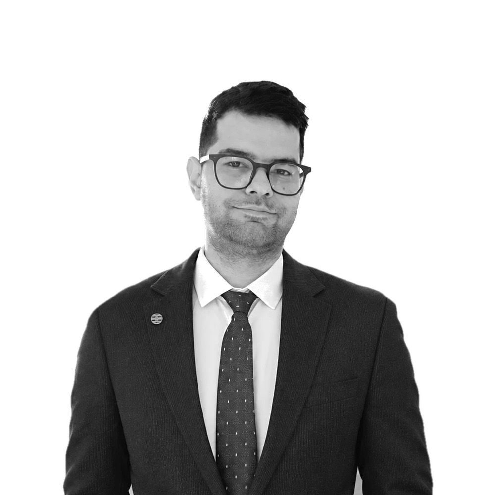

01Museology
Museology
Visual Arts, Museology and Curatorship — University of Bologna
Art historian & translator
Mahmoud Mohammadi is an art historian and translator based in Paris, working between Persian visual culture and the contemporary museum — research, mediation and scenography, in five languages.

The practice
For me, a museum is where research meets the public. I read objects closely, describe them clearly and stage them with care. Persian texts, images and textiles are my field; museology and scenography are how I share them.
— M.M.
Fields of work
Visual Arts, Museology and Curatorship — University of Bologna
Art mediation — 22,48 m² Gallery, Romainville · Grand 8 Festival, Paris
Sasanian texts, Manichaean iconography, Persian printed textiles
Persian, English, French, Italian and Arabic
Research
Two co-authored articles — on Sasanian texts and Manichaean iconography — in Ancient Iranian Studies and in Brill's Iran and the Caucasus.
Working principles
An object only speaks when someone has looked at it long enough to listen.
Good labels and good translations share one goal: nothing lost between languages.
Space, light and sequence decide whether a visitor follows a story or walks past it.
About
I studied English Translation at the University of Isfahan, then Visual Arts, Museology and Curatorship at the University of Bologna, with Erasmus+ stays in Liège and Paris. Somewhere between those cities, translation and art history became one practice.
Today I work on Persian visual culture — from Sasanian texts to printed textiles — and on how museums and galleries mediate it, most recently as an art mediator in Romainville and at the Grand 8 Festival in Paris.
Away from the desk I play the setar, a traditional Iranian instrument, and photograph nature, architecture and art history.
Curriculum vitae
Publications & talks
Co-authored, peer-reviewed work on Iranian art and religion, and talks on Persian textiles — shared with students, scholars and audiences across Europe.
Sangari, Davari, Mohammadi, Khosravi · Vol. 5, No. 14, 113–122
Open access
Sangari, Fathipour Dehkordi, Khosravi, Mohammadi
Accepted · double-blind peer review
Middle East Cultures, Faculty of Political Science and Journalism, Adam Mickiewicz University
Talk
Volunteer musician, playing the setar
Event
Begin
Exhibitions, mediation, research or translation — write to me in English, French or Persian.
Studied & worked at
Questions
Persian is my native language. I work in English (C1) and French (B2, DELF), and read Italian (A2) and Arabic (A1).
Iranian art and culture — Sasanian and post-Sasanian texts, Manichaean iconography and Persian printed textiles — and how museums can present them, including through virtual exhibitions.
At the University of Isfahan and the University of Bologna, with Erasmus+ stays at the University of Liège and Paris 8 University, and short courses in Berlin and Poznań.
By email at maahaan.1995@gmail.com, or on LinkedIn. I'm based in Paris.